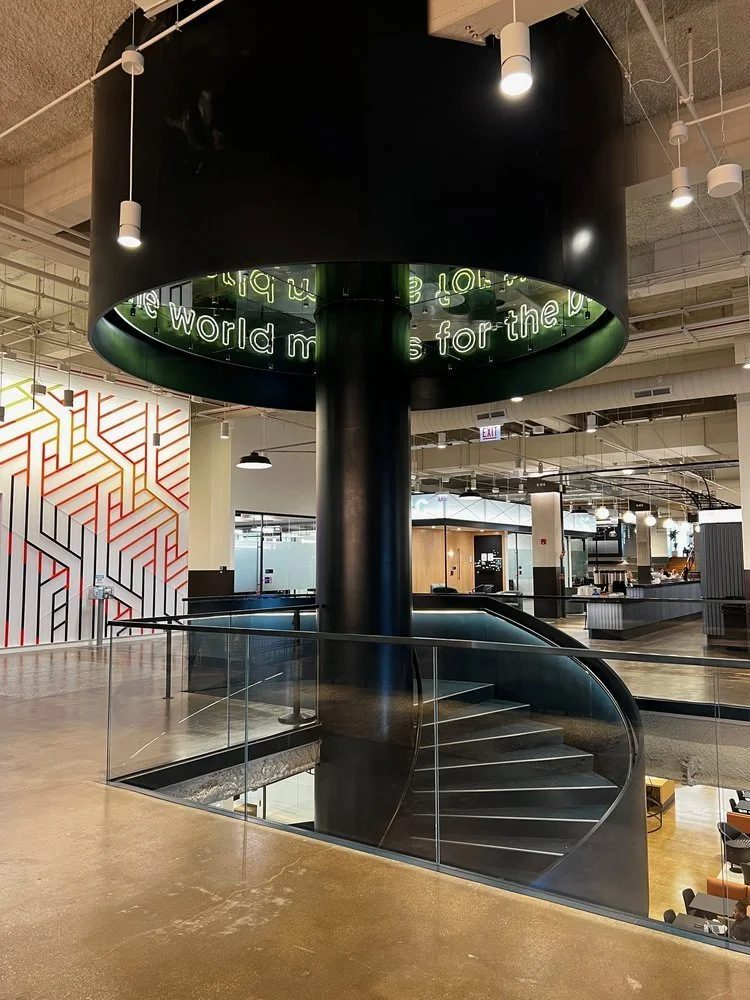
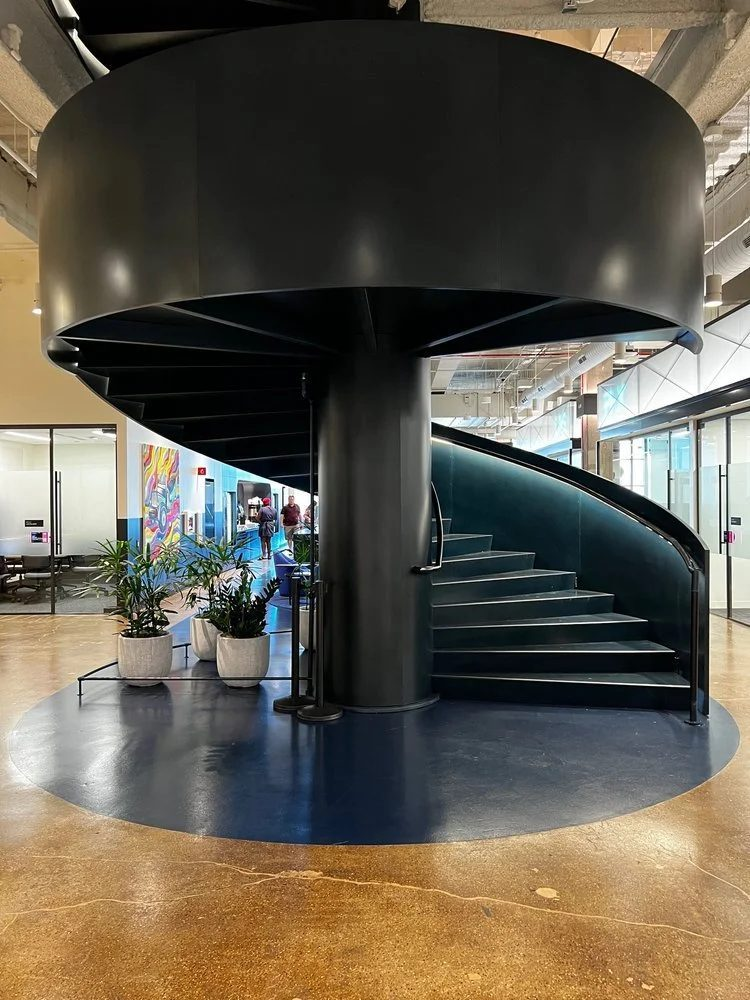
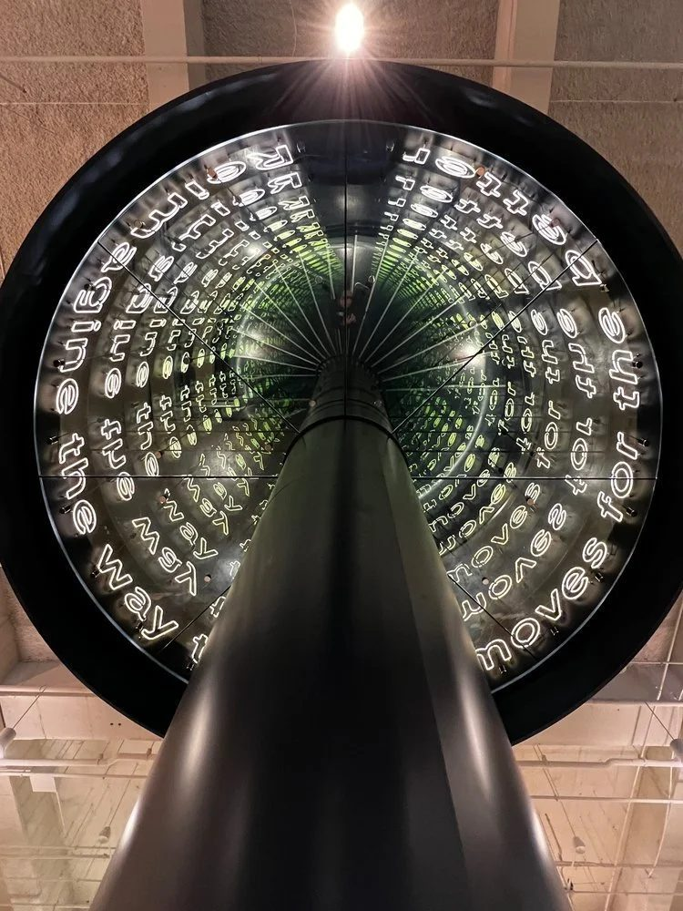
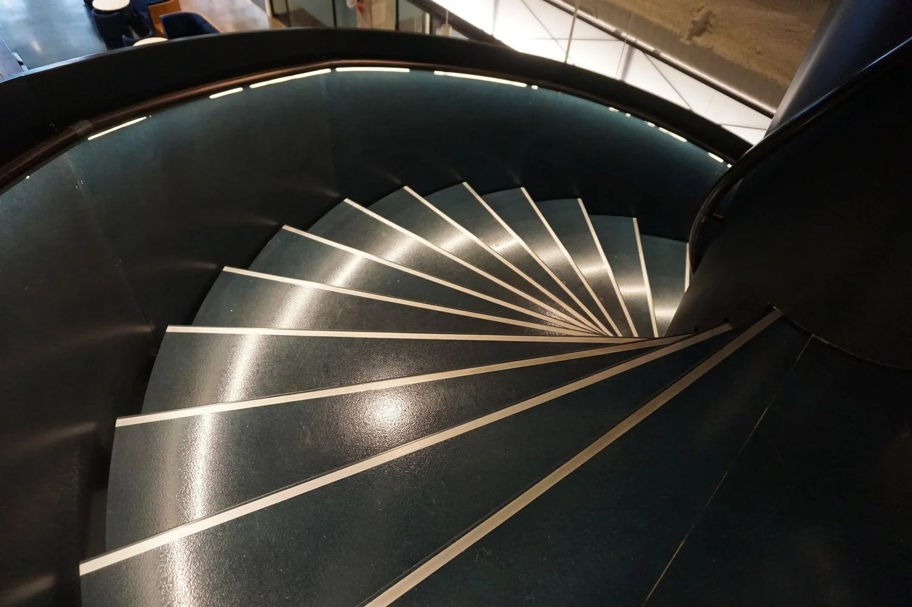
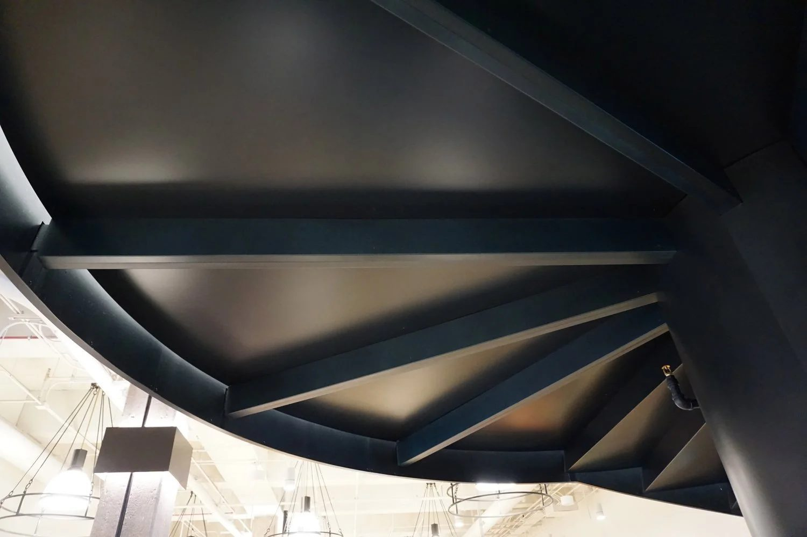

Architectural / 2022
Grand Spiral Stair
Uber Freight HQ, Old Post Office
A sixteen foot diameter stair finished in a custom blue toned patina, inspired by the building's historical spiral mail chutes.
In the heart of Chicago's Old Post Office, now home to Uber Freight's headquarters, the Grand Spiral Stair is more than vertical circulation. It is a piece of the building's history returned in contemporary form.
The geometry takes its cue from the spiral mail chutes that once moved letters through the building. The finish is a custom blue toned patina that reads close to oil rubbed bronze, and an infinity mirror at the top extends the spiral past the ceiling.
Produced in collaboration with Gensler Chicago, the stair merges art, technology, and function inside a landmark structure.
Details
- Year
2022 - Location
Chicago, IL - Category
Architectural - Materials
Fabricated steel, custom blue patina, mirror
Credits
- Architect: Gensler Chicago
- Fabrication partner: Parenti & Raffaelli
Index





